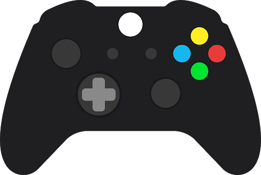
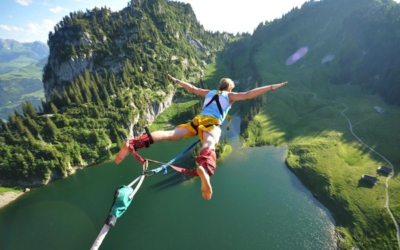
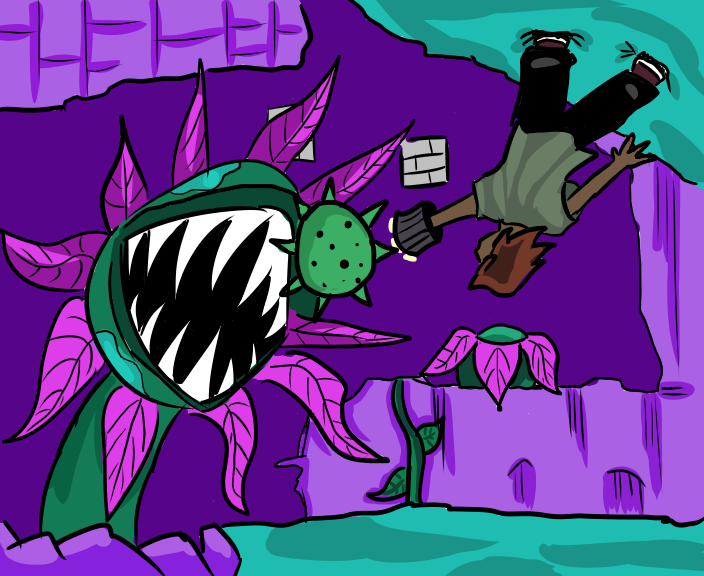

About me
Education
Instituto Tecnológico y de Estudios Superiores de Monterrey, Mexico City. Second year student. Computational technology engineering.
Experience
Member of the scholarship program of ITESM oriented to technologies. One of my responsibilities consists in developing programs using the devices available at school in order to create tutorials that help other students. I worked in the pairing of a RaspberryPi and a Myo armband (device used for controlling other devices by using muscular gestures). In this project, I proved the connection by creating a program which allows the user to turn on a led on a led matrix using hand movements.
Programming languages
- C++: general knowledge in object oriented programming.
- C: general knowledge of the structure.
- C#: basic knowledge to develop a game on Unity.
- Python: general knowledge of the structure. I have worked with numpy and pandas libraries. Also, developed codes on a RaspberryPi.
- MATLAB: general skills for creating simulations of physical phenoms. Basic experience in developing MATLAB apps
- R: basic knowledge in structure.
Projects
Game simulation (2020)
For an exam, I developed a game simulation on C++ which mainly consists of asking the user for a number of iterations and simulating the game until the characters die.
Weight prediction (2019)
For a class project, I worked in a Python code using numpy and panda libraries for analysis of data. The purpose of the code was to receive a csv file with the food information of the user. With a formula, the program would return the weight that the user would have the next year based on the height, current weight and sex of the user.
Bungee simulation (2020)
Using MATLAB, I simulated the trajectory a person would have in a bungee jump. My work was focused on creating an interactive program that receives information and then creates the movement, velocity and acceleration graph.
Virus information program (2020)
Using R, I wrote a program that could read the information of some kinds of Influenza virus from the NCBI database and give basic information about them.

Mini Game Jam (2021)
A group of friends and I developed a game called "Ungravity forest" on Unity. This game was submitted to the 2021 mini Gme Jam where we ended up being in the 5th position. My job in the team was to develop animations for camera movement, shooting mechanics and level design.
